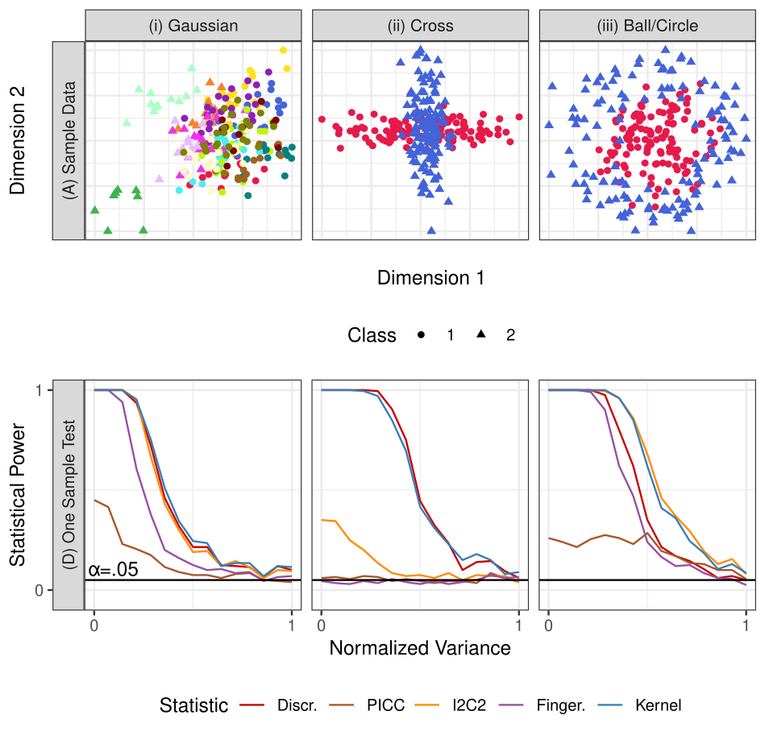

<!-- TODO add slide numbers & maybe slide name --> ### Accidental Deviations in Human Connectomics  Joshua T. Vogelstein | {[BME](https://www.bme.jhu.edu/),[CIS](http://cis.jhu.edu/), [ICM](https://icm.jhu.edu/), [KNDI](http://kavlijhu.org/)}@[JHU](https://www.jhu.edu/) | [neurodata](https://neurodata.io) <br> [jovo@jhu.edu](mailto:j1c@jhu.edu) | <http://neurodata.io/talks> | [@neuro_data](https://twitter.com/neuro_data) --- ## Outline - [Problem Space](#prob) - [Defining and Quantifying Reliability](#statistics) - [Properties of Discriminability](#props) - [Results](#results) - [Discussion](#disc) --- name:prob ## Outline - Problem Space - [Defining and Quantifying Reliability](#statistics) - [Properties of Discriminability](#props) - [Results](#results) - [Discussion](#disc) --- ## What is fMRI? - fMRI: .ye[f]unctional .ye[M]agnetic .ye[R]esonance .ye[I]maging - For $t$ timepoints, measure the BOLD signal within each "piece" (voxel) of the brain - Image is $4D$: $3$ spatial dimensions, $+ 1$ temporal dimension - $\mathcal O(100,000)$ distinct voxels, each of which has a $T$-dimensional timecourse -- - Raw data is unideal - .ye[individual]: subject moving in the scanner - .ye[biology]: different shapes of brains, movement of blood is delayed, artifacts from air, presence of non-cortical tissue - .ye[imaging modality]: signal attenuations due to variety of factors, image takes a few seconds, scanner model -- - $T$ is small -- - unknown artifacts --- ### What do scientists want to learn from connectomes? - Neural coding: link patterns of brain .ye[activity] to past, ongoing, and future events - traditional framework for neuroscience investigations -- - Connectal coding: link patterns that arise in the .ye[connectome] (i.e., connectivity profiles) to past, ongoing, and future events - connectal coding presents the formal problem space scientists hope connectomes will address --- ### Why isn't connectomics useful yet? - sources of variability - .ye[accidental deviations] - variability due to data collection: how was the data collected, and where? - pre-processing: how did we go from the raw collected data to a connectome? -- - .ye[systematic deviations] - .ye[biological or direct experimental manipulation]: this is the variability we care about -- - Connectomics is expensive - answer how, and how much, each facet of variability materializes in a connectome requires expansive datasets - graph analysis has proven to be fundamentally challenging --- ## How do we de-noise data? - problems due to the individual, the biology, the imaging modality, and small $T$ are critical to address - Processing Pipeline: takes a raw fMRI scan, and produces a "processed" .ye[derivative] -- - Goal: reduce known artifacts -- - Each artifact represents a decision - how do we best remove it? - many strategies for removing each known artifact; unclear which are best, and whether/how strategies work together --- ### What types of derivatives do we care about? - focus on derivatives that address the small $T$ problem -- - Parcellation: maps from each of the $\mathcal O(100,000)$ voxels to one of $D$ sub-regions - $D \ll \mathcal O(100,000)$ - usually summarize known anatomical relationships (e.g. Brodmann) or functional relationships (e.g. Desikan) -- - derivatives are $D \times T$ - For each timepoint $t$, for each region in the parcellation $d$, take spatial mean of BOLD signal for all voxels mapping to $d$ --- ## How do we get a connectome? - .ye[Connectome]: "map" of some notion of neural "connectivity" in the brain - functional connectivity: how "similar" are the time courses for two regions? -- - similar: pairwise correlation between the timecourses for each of the $D$ regions in the parcellation - produces a $D \times D$ graph describing the functional connectivity --- ## What data will we be using? - CoRR metadataset - $N>1,700$ individuals imaged across $26$ different datasets - All individuals have anatomical MRI and fMRI scans needed to estimate a connectome - Most of the data is test-retest: individuals are measured $s \geq 2$ times under a similar experimental design --- name:statistics ## Outline - [Problem Space](#prob) - Defining and Quantifying Reliability - [Properties of Discriminability](#props) - [Results](#results) - [Discussion](#disc) --- ## What is Reproducibility? - .ye[Reproducibility]: ability to replicate, or reproduce, a conclusion -- - Closely related to repeatability - under a largely identical experiment, could we produce the same result two (or more) times? -- - serves as a "first-pass" check for scientific utility - "If results cannot be reproduced, they are (generally) less useful" - currently in a "reproducibility crisis" - many articles have highlighted failures to reproduce in neuroscience and psychology --- ### How do we address the Reproducibility Crisis? - people frequently misinterpret $p$-values, so what happens if we ban them? - Goal: force people to make more modest scientific claims - tends to yield overstated claims, suggesting bans have the opposite of the intended effect -- - Quantify reproducibility directly - measure each sample/individual several times, and look at the outputs - .ye["Garbage in; garbage out"]: if the measurements do not reproduce, inference on the data can't reproduce either --- ### Statistics for Quantifying Reproducibility - most approaches tend to focus on the concepts of between-individual and within-individual summaries -- - parametric approaches - reproducibility is achieved if most of the variability is between-individuals, rather than within-individuals - e.g. Intraclass Correlation Coefficient (.ye[ICC]) and Image Intraclass Correlation Coefficient (.ye[I2C2]) -- - non-parametric approaches - reproducibility is achieved if measurements from the same item are more similar to one another than measurements from different items - e.g. Fingerprinting (.ye[Finger.]) and DISCO (.ye[Kernel]) --- ### Limitations of Existing Reproducibility Statistics - Data: $N$ items in $d > 1$ dimensions measured $s \geq 2$ times each | Statistic | Chief Limitation | | :--- | :--- | | ICC | univariate | I2C2 | does not generalize outside Gaussian framework | Finger. | overly greedy: only look at most similar measurement to the reference measurement | DISCO | struggles when $s$ is small --- ### Discriminability Statistic: Data - $n$ individuals measured $s = 2$ times each, for $N = n\cdot s$ total measurements - generalizes to $s \geq 2$, but $s=2$ is simpler <img src="images/discr/dummy_sim_sim.png"/> --- ### Discriminability Statistic: Step 1 - Compute $N \times N$ pairwise distance matrix between all measurements - measurements are indexed first by individual identifier, and second by "measurement session" <img src="images/discr/dummy_sim_dmtx.png"/> --- ### Discriminability Statistic: Step 2 - For each measurement, identify which measurements are from the same individual (<font color="green">green boxes</font>) - let $\color{green}g$ be the total number of <font color="green">green boxes</font> <img src="images/discr/dummy_sim_dmtx_match.png"/> --- ### Discriminability Statistic: Step 3 - For each measurement, identify measurements from other individuals that are more similar than the measurement from the same individual (<font color="orange">orange boxes</font>) - let $\color{orange}f$ be the total number of <font color="orange">orange boxes</font> <img src="images/discr/dummy_sim_dmtx_closer.png"/> --- ### Discriminability Statistic - Discr. = $1 - \frac{\color{orange}f}{N(N-1) - \color{green}g} = 1 - \frac{\color{orange}{84}}{20\cdot 19 - \color{green}{20}} \approx .77$ <img src="images/discr/dummy_sim_repr.png"/> - high discriminability: same-individual measurements are more similar than across-individual measurements --- ### Discriminability is Construct Valid <img src="images/discr/dummy_sims.png" style="height: 350px"/> - under the given construct (what the simulation is supposed to show), discriminability provides a sensible statistic - other approaches do not --- name:props ## Outline - [Problem Space](#prob) - [Defining and Quantifying Reliability](#statistics) - Properties of Discriminability - [Results](#results) - [Discussion](#disc) --- ## Population Discriminability - population discriminability $D$ is a property of the distribution of measurements - A sequence of items $x_i^k$ from individuals $i=1,..., N$ measured at time $k=1,..., s$ - $D = \mathbb P(\delta(x_i^k, x_i^{k'}) < \delta(x_i^k, x_j^{k''}))$ - Probability that distances from measurements of the same individual are smaller than distances from measurements of different individuals - as we see more data, Discr. converges to $D$ (asymptotically consistent) --- ## Simulation Setup - Construct $3$ simple simulations where the data are describable in Gaussian (or non-Gaussian) framework - level of "noise" in the simulation is varied <img src="images/discr/sims_sim.png" style="height: 450px"/> --- ## Test to determine Reliability - Fundamental question: are the data discriminable at all?  --- ## Test to Compare Reliabilities - Fundamental question: is one dataset more discriminable than another? <img src="images/discr/sims_ts.png" style="height: 450px"/> --- ### Connecting Discriminability to Downstream Inference - Fundamental question: does discriminability .ye[matter] for inference? ##### Assumptions Data follows Gaussian mixture model plus additive Gaussian noise ##### Theorem 1 $D$ provides a lower bound on the predictive accuracy of a subsequent classification task, and consequently ##### Corollary 2 a strategy with a higher $D$ provably provides a higher bound on predictive accuracy than a strategy with a lower $D$ --- ### Discriminability and Predictive Accuracy - as accuracy decreases, Discr. decreases proportionally <img src="images/discr/sims_acc.png" style="height: 450px"/> --- name:results ## Outline - [Problem Space](#prob) - [Defining and Quantifying Reliability](#statistics) - [Properties of Discriminability](#props) - Results - [Discussion](#disc) --- ## Analysis Procedure - For all $N>1,700$ individuals, process each measurement exhaustively across $192$ different pre-processing pipelines 1. Registration: alignment of brains (2 options: ANTs/FSL) 2. Frequency Filtering: removing spurious fluctuations (2 options: Y/N) 3. Scrubbing: removing timepoints where the subject moved substantially (2 options: Y/N) 4. Global Signal Regression: removing spatial average at each timepoint (2 options: Y/N) 5. Parcellation choice: making the data smaller (4 options) 6. Edge Weights: how do we quantify functional connectivity (3 options: Raw, Log, Pass-to-Rank) $192 = 2 \times 2 \times 2 \times 2 \times 4 \times 3$ - all options represent strategies experts consider useful --- ### Pre-processing has a major impact on discriminability <img src="images/discr/fmri_cmp.png" style="height: 420px"/> - Consequence: choosing how to pre-process your data matters --- ### Marginally most discriminabile options tend to be best global options <img src="images/discr/individual_methods.png" style="height: 200px"/> - Best pipeline marginally (FNNGCP) is second best pipeline overall, and not much worse (2-sample test, p=.14) than the best pipeline FNNNCP - Consequence: we may not need to always try every pre-processing strategy every time --- ### Selection via Discriminability improves inference - For each pre-processing strategy, for each dataset, compute: 1. Within-dataset Discr. 2. Demographic effects (sex and age) within the dataset via Distance Correlation (DCorr) - Within a single dataset, regress demographic effect on Discr. - Question: does a higher discriminability tend to yield larger effects for known biological signals? --- ### Selection via Discriminability improves inference <img src="images/discr/dependence.png" style="height: 400px"/> - Consequence: maximizing discriminability in general improves downstream inference --- name:disc ## Outline - [Problem Space](#prob) - [Defining and Quantifying Reliability](#statistics) - [Properties of Discriminability](#props) - [Results](#results) - Discussion ---